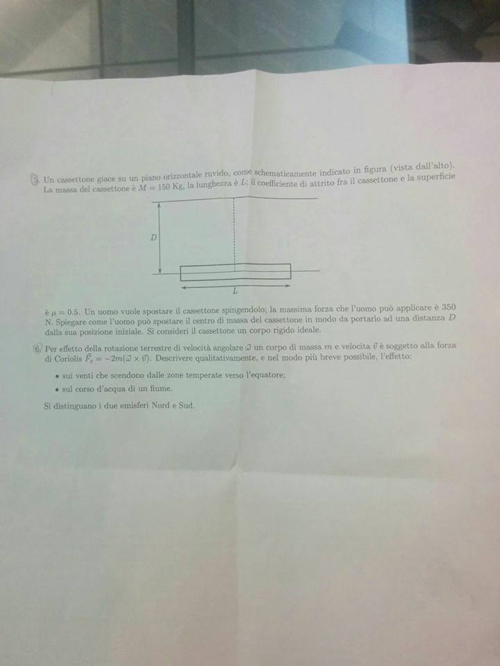
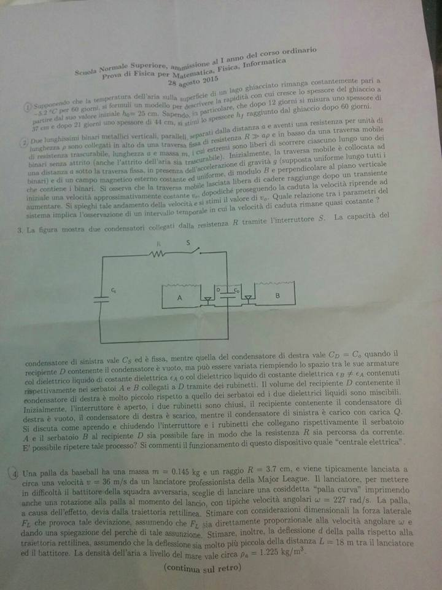

andrea9630 ago 2015, 15:07
apro sta discussione perchè ho visto che ce n'è una simile sul forum di mate ed è giusto che anche i fisici facciano la loro parte :lol:
Come vi sono andati gli scritti? come avete trovato le prove?
CapitanFindus30 ago 2015, 16:03
allora vediamo. La prova di fisica a me non mi è sembrata difficilissima. Il solo problema che mi ha dato molto da pensare era quello del cassettone perfido. Gli altri erano generalmente di media difficoltà, poi c'era quello dell'effetto magnus già postato su questo forum da te @Andrea96 ahahahah!
Se devo fare una stima per la prova di fisica penso di averli fatti tutti discretamente a parte quello del cassone che ho provato ad abbozzare qualcosa.. speriamo! Voi?
Pigkappa30 ago 2015, 17:46
Mi postate qualche problema?
andrea9630 ago 2015, 18:53
Mio commento personale sulla prova:
in generale mi è piaciuta perchè i problemi erano poco contosi e alcuni molto intelligenti (in particolare il 5 che secondo me era sia il più difficile che il più bello :D ) perchè in tutti, apparte il primo, non si chiedeva un risultato ma spiegazioni quantitative e qualitative oppure di inventarsi metodi per fare qualcosa. Ahimè ho sbagliato miseramente l'uno e temo che con quella cavolata mi giochi tutta la prova, e mi dispaice perchè col segno di poi era il più semplice, ma non ho compreso bene la richiesta. Per il resto l'unico più standard degli altri era il 2.... E ri-ahimè una decina di giorni fa ho praticamente detto a tutta italia come si faceva il 4, facendomi del male da solo, ma vabbè... :(
Poi sul 3, apparte la prima richiesta che era quasi semplice ( cioè quella di trovare un modo per far scorrere corrente ) le altre due le ho trovate molto interessanti e io ho interpretato che siano state messe lì con l'intenzione di farci discutere la conservazione dell'energia nel sistema...
-
Allegati
-

- sns 2015 '.jpg (34.5 KiB) Visto 11071 volte
-

- sns 2015.jpg (72.46 KiB) Visto 11071 volte
andrea9630 ago 2015, 19:13
Si effettivamente il 6 stonava un po con il resto della prova... un bel problema di circuito RLC sarebbe stato meglio :lol:
Simone25631 ago 2015, 21:21
Problemi belli direi! Entrambi i giorni oserei dire! Cagate qua e lá le abbiamo fatte tutti purtroppo :lol:
Concordo sul fatto che il 5 sia stato quello più arzigogoloso :P
(Ovviamente mancava un figo sistema meccanico infinito :twisted: )
andrea9631 ago 2015, 23:49
renat_ ha scritto:A me il 5 non è sembrato difficilissimo
mmmm sicuro? La/le (forse anzi spero) soluzioni che abbiamo trovato per spostarlo non sono ne immediate ne facili ne (oserei dire) intuitive... se tu hai trovato una soluzione semplice per caso puoi (almeno) descriverla per farmi sentire scemo? No scherzo, probabilmente mi sentirò scema ma mi piaxerebbe saperla proprio per saperla... :D
andrea961 set 2015, 11:12
renat_ ha scritto: era naturale che l'asse di rotazione fosse l'estremo opposto.
Eh il problema è proprio che non è così naturale, anzi non è così.... se si fa qualcosa per "imporre" un perno questa soluzione funziona ma dal test non si capisce se questa cosa è lecita. In ogni caso quel metodo di agire sul cassone permette di spostare ed è forse il metodo più efficace perchè si fa meno fatica... il problema è che è ovvio che il perno non sia il cdm, ma l equazione per determinare il perno è un orribile equazione di quarto grado. Però alla fine il testo chiedeva di spostare il cassone e lo hai fatto quindi credo vada bene :D
andrea961 set 2015, 11:17
renat_ ha scritto:
PS
ho considerato la soluzione per alfa piccolo, quindi ho approssimato il punto di applicazione della forza d'attrito al centro del cassettone
In base a cosa dici che α è piccolo? Io ho fatto il problema per un α generico e mi veniva che l intervallo va da angoli piccoli a angoli grandi? Hai fatto vedere che esistevano soluzioni per angoli piccoli e quindi alla fine bastava quello?
remat71 set 2015, 16:03
renat_ ha scritto:C'era più di una soluzione:
la forza doveva essere applicata su una delle due estremità con una certa inclinazione che ho chiamato alfa;ora la forza premente non era omogenea su tutta la superficie di contatto ed era massima all'estremo opposto: era naturale che l'asse di rotazione fosse l'estremo opposto. Con un po' di calcoli mi è venuto che sen(alfa)+ cos(alfa)>= di 1 virgola qualcosa.
PS
ho considerato la soluzione per alfa piccolo, quindi ho approssimato il punto di applicazione della forza d'attrito al centro del cassettone
renat anche io ho ottenuto un'equazione simile alla tua, ma mi veniva \(cos\alpha + \frac{sen\alpha}{4} \geq 1,05\) e non avevo soluzioni poichè derivando ottenevo che il massimo della funzione era in circa 14 gradi e valeva 1,037.
sall961 set 2015, 16:24
renat_ ha scritto:altrimenti sarebbe stato molto più complesso gestire il momento della forza d'attrito
Un modo che ho trovato (sempre che sia corretto :? ) per sviare questa difficolta e' questo:
Sia \(dN(x)\) la forza normale infinitesima a distanza \(x\) dal perno (supposto l'estremo opposto a quello a cui applichiamo la forza) e \(F_1\) la componente verticale della forza che applico.
Si ha che
\(\displaystyle \tau_{att}= \int_{0}^{L} {\mu dN(x) x}\).
Tuttavia, dato che non si ha nessuna rotazione sul piano verticale, ho
\(\displaystyle F_1L + \int_{0}^{L} {dN(x)\cdot x}-Mg\dfrac{L}{2}=0\).
A questo punto e' facile notare che
\(\displaystyle \tau_{att}=\mu Mg\dfrac{L}{2}-\mu F_1L\)